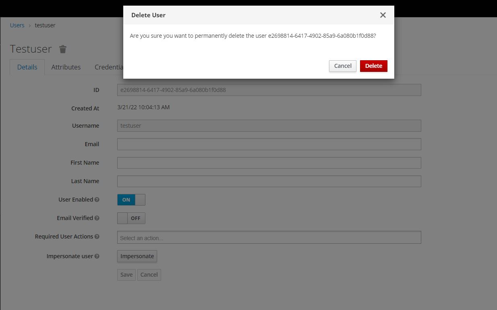

User Management¶
User management is the module which enables the effective management of users by assigning the necessary roles and tasks to be carried out.
Overview¶
How do you manage users in gofr?
In order to manage user access in gofr, you need to access the Keycloak Administration Console. This should only be accessed by the system's Administrator.

From the Admin Console, you have a wide range of actions you can perform to manage users.

Administrator Roles¶
Managing User Roles¶
There are three types of user roles in gofr. They are:
- Admin role
- Data manager role
- Open role
The initial server configuration includes an administrator role.
This account and password should be immediately changed after installation. See the Developer Guide for more information.
Accounts assigned the admin role can add users, configure the system, and undertake all the tasks of data managers. Data manager accounts are limited to only managing data. They can share data sources and do other matching tasks. Custom accounts with specific roles may be created in the future.
PS: Please let the community know if you have use cases for custom account roles.
Searching for a user¶
Search for a user to view detailed information about the user, such as the user’s groups and roles.
Procedure
- Click Users in the main menu. This Users page is displayed.
- Type the full name, last name, first name, or email address of the user you want to search for in the search box. The search returns all users who match your criteria.
View All Users¶
To view all the users in gofr,click View all users to list every user in the system.
Creating a user¶
To create a new user ->
- Click Users in the menu.
- Click Add User.
- Enter the details for the new user.
- Click Save. After saving the details, the Management page for the new user is displayed.
Username is the only required field
Deleting a user¶
You can delete a user, who no longer needs access to gofr. If a user is deleted, the user profile and data is also deleted.
To delete a user ->
- Click Users in the menu. The Users page is displayed.
- Click View all users to find a user to delete.

~~ Alternatively, you can use the search bar to find a user.~~
- Click the 'Delete' :delete: icon next to the user you want to remove and confirm deletion.
Credentials management¶
The credentials managment tab allows the adminstrator to configure the password, profile(s), email (s) and user locales of the various users of gofr.

The following fields are included:
Position¶
The arrow buttons in the Position column allow you to shift the priority of the credential for the user. The topmost credential has the highest priority. The priority determines which credential is displayed first after a user logs in. The default priority is 'password'.
Type¶
This column displays the type of credential, i.e. password or OTP.
User Label¶
This is an assignable label to recognize the credential when presented as a selection option during login. It can be set to any value to describe the credential.
Data¶
This is the non-confidential technical information about the credential. It is hidden, by default. You can click Show data… to display the data for a credential.
Actions¶
This column has two actions:
-
Click Save to record the value or the user field.
-
Click Delete to remove the credential.
You cannot configure other types of credentials for a specific user in the admin console; that task is the user’s responsibility.
You can however, delete the credentials of a user in the event a user loses an OTP device or if credentials have been compromised. You can only delete credentials of a user in the Credentials tab."
Setting a password for a user¶
If a user does not have a password, or if the password has been deleted, the Set Password section is displayed. If a user already has a password, it can be reset in the Reset Password section.
Procedure
- Click Users in the menu. The Users page is displayed.
- Select a user.
- Click the Credentials tab.
- Type a new password in the Set Password section.
- Click Set Password.
If Temporary is ON, the user must change the password at the first login. To allow users to keep the password supplied, set Temporary to OFF. The user must click Set Password to change the password.
- Alternatively, you can send an email to the user that requests the user reset the password.
a. Navigate to the Reset Actions list under Credential Reset. b. Select Update Password from the list. c. Click Send Email. The sent email contains a link that directs the user to the Update Password window. d. Optionally, you can set the validity of the email link. This is set to the default preset in the Tokens tab in Realm Settings.
Creating a One Time Password (OTP)¶
If OTP is conditional in your realm, the user must navigate to Keycloak Account Console to reconfigure a new OTP generator. If OTP is required, then the user must reconfigure a new OTP generator when logging in.
Alternatively, you can send an email to the user that requests the user reset the OTP generator. The following procedure also applies if the user already has an OTP credential.
Procedure¶
- Click Users in the main menu. The Users page is displayed.
- Select a user.
- Click the Credentials tab.
- Navigate to the Reset Actions list.
- Click Configure OTP.
- Click Send Email. The sent email contains a link that directs the user to the OTP setup page.
Required actions¶
You can set the actions that a user must perform at the first login. These actions are required after the user provides credentials. After the first login, these actions are no longer required. You add required actions on the Details tab of that user.
The following are examples of required action types:
Update Password¶
The user must change their password, once they log in.
Configure OTP¶
The user must configure a one-time password generator on their mobile device using either the Free OTP or Google Authenticator application.
Verify Email¶
The user must verify their email account. An email will be sent to the user with a validation link that they must click. Once this workflow is successfully completed, the user will be allowed to log in.
Update Profile¶
The user must update profile information, such as name, address, email, and phone number.
Setting required actions for one user¶
You can set the actions that are required for any user. To set actions required for a user ->
- Click Users in the menu.
- Select a user from the list.
-
Navigate to the Required User Actions list.
-
Select all the actions you want to add to the account.
- Click the X next to the action name to remove it.
- Click Save after you select which actions to add.
Setting required actions for all new users¶
You can specify what actions are required before the first login of all new users. The requirements apply to a user created by the Add User button on the Users page or the Register link on the login page.
To set a required action for all new users->
- Click Authentication in the menu.
- Click the Required Actions tab.
- Click the checkbox in the Default Action column for one or more required actions. When a new user logs in for the first time, the selected actions must be executed.
Enabling terms and conditions as a required action¶
You can enable a required action that new users must accept the terms and conditions before logging in to Keycloak for the first time. To enable ->
- Click Authentication in the menu.
- Click the Required Actions tab.
- Enable the Terms and Conditions action.
- Edit the terms.ftl file in the base login theme.
Self-registration¶
Administrators may configure the system to allow for anyone to self-register. This is under the Configure System tab. This option is off by default.
To enable users to self-register->
- Click Realm Settings in the main menu.
- Click the Login tab.
- Toggle User Registration to ON.
- Click Save.
User Roles¶
Registering as a new user¶
As a new user, you must complete a registration form to log in for the first time. You add profile information and a password to register. Registration form
Important
To register ->
- Click the Register link on the login page. The registration page is displayed.
- Enter the user profile information.
- Enter the new password.
- Click Save.
More information about the features and functions of gofr can be accessed in the User guide
Update Account¶
A user can update their account by Clicking on Account on the Navigator. Some of the details a user can update include:
Edit Account¶
Here, a user can update their Email, First Name, Last Name and Click Save to record the new details

Change Password¶
To update password, key in your New Password, enter the same password in Confirmation and Click Save.

Authentication¶
To add authentication on your account,
Select Authenticator -> Follow the instructions to add authentication to your account.